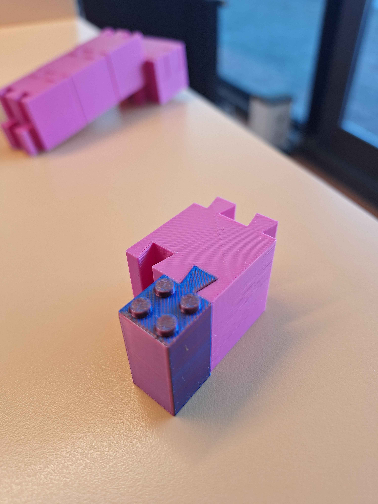
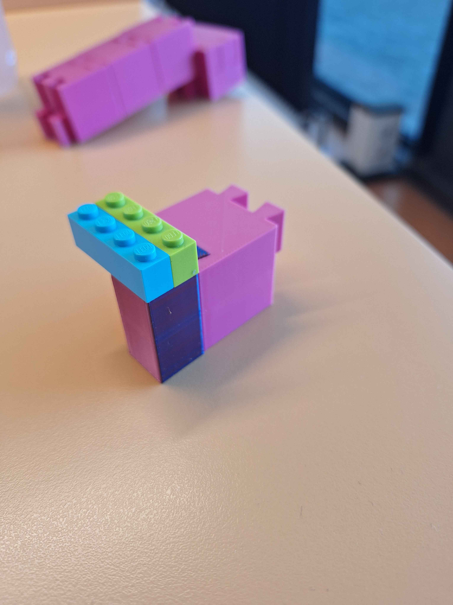

Lego has the inherent benefit of being associated with playfulness by being a toy. However
the creative freedom, accesibility and ease of use make it a great fit iteration of protoypes.
In other words, lego is a great tinkering material.
For people unfamiliar with modern lego building techniques, there are certain blocks called 'SNOT' blocks nowadays. This acronym
stands for Studs Not On Top. The current SNOT bricks that lego makes, have additional studs on the side(s). There is currently
no lego brick that has studs on the top and bottom, though there are plenty of building techniques to reverse the stud direction
by using a number of other bricks. My first concept, was to make a block that can do this by itsself.
For my second concept, I was reminded of making suspension for lego vehicles. The current lego springs are based around lego technic
rather than the basic lego connections. So, why not create a brick that does exactly that? Or even a brick that combines both concepts?
CAD design
Change of plans
Looks like I misinterpreted the intent of the assignment, I'll have to replace the sketches with the ones for the current block. The
underlying idea, is to make a building block that connects in a satisfying way while dealing with imperfect tolerances of 3d printed materials
For now, here is the design of my new block
profile detail & dimensions
Seen here is the all purpose sketch for the different blocks. These are all the possible positions
for the dovetails for the moment. Based on the block, different combinations of the dovetails will be used.
CAD view
Currently, there are four blocks. A basic block, a T-piece block, an end-cap and a block that inverts the direction of the dovetails.
First test
Pretty in pink, right?
Almost all of the building blocks fit together nicely.
With the notable exception of one of the blocks that was pulled off the printbed before
it was allowed to fully cool down.
Interoperability
Since I already had made some CAD files for
the lego bricks,
it's easy to repurpose them and make them
into a piece that functions as an interface between the
dovetail blocks and lego pieces.
The initial pieces have the
sizes as determined by the original lego design.
after
printing the pieces, the studs were too small to click onto lego
and the bottom tube was too flexible.
The solution was to make the
bottom solid so there are no attachment points there, but the top
studs were enlarged to fit lego blocks neatly.


Evaluation
Self guidance
The dove tail blocks have a high self guidance aspect.
On one end of the block are shapes where on the other end there is a negative
of that same shape. It then becomes very intuitive to slide them together in a line.
Preciousness
Similar to lego, these blocks are made out of inexpensive plastic.
Since they can easily be produced using a 3d printer, an argument can be made that
the blocks have an even lower preciousness than lego.
Threshold
The threshold is quite low. To link together the blocks in the most
simple manner, one can rely on the self guidance.
Ceiling
The ceiling of the blocks was higher than initially expected.
While the first instinct might be to lock the blocks together such that both tails
lock with the pins, it is also completely possible to offset the blocks horizontally
and link only one of the tails. On top of that, with the split between the top half
and the bottom half of the dove tail connection, it also becomes possible to vertically
offset the block.
All these offset blocks can then be locked together again to prevent the built up shape
from sliding loose again.
Interoperable
By virtue of the previous assignment, the block has interoperability
with lego. While this may not be groundbreaking, it does allow for anyone using the blocks
to further sculpt and lock together a shape.
Seed power
Since the building blocks are for the most part simply squares,
there is not that an incredible seed power. What may slightly improve the seed power
is the specific type of connection between the blocks and the fact that the blocks can
be offset. So while the seed power is not especially high, there is something to tinker
and play with.
This could be improved by 3d printing some more differently shaped blocks to work with.
Wide walls
The dove tail blocks have decently wide walls.
There is no one thing that the blocks are pushed into doing, apart from building in general.
Within the mechanical domain the blocks can function in varied ways.
While there may not be the ability to cross domains from for instance mechanical to
electrical, the width of the walls is still quite high.